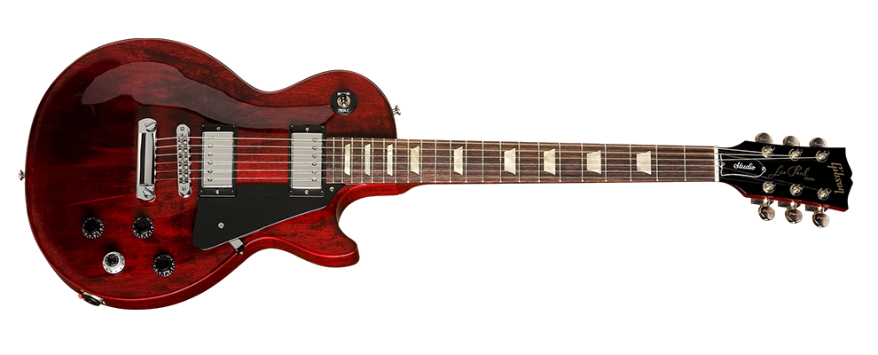

Gibson Robot Les Paul - Wine Red 16/4/2020
La Guitarra Robot redefinido el poder y la posibilidad de una Guitarra eléctrica para capturar la imaginación de los reproductores de todo el mundo. Gibson es ahora orgulloso de responder a las demandas de miles de personas que querían otra oportunidad de poseer la tecnología innovadora con la introducción de los Robot Les Paul Studio, que combina con la potencia y el rendimiento del icónico modelo de Les Paul de Gibson con el revolucionario sistema de ajuste de Robot.
$1000
Fender Standard Stratocaster HSS 16/4/2020

El Fender Standard HSS Stratocaster es la mejor manera para que los guitarristas con un presupuesto ajustado obtengan una Fender Stratocaster real con un humbucker caliente y dos pastillas de bobina simple. Las Stratocasters HSS estándar suenan increíbles, se ven tan geniales como sus contrapartes estadounidenses y tienen lo que se necesita para hacer el trabajo atascado en el sótano o en el escenario del club.
$800
Epiphone Broadway 16/4/2020

La Broadway también llamada "Fat Jazz Mama" es la continuación de la L-5 de Gibson, la Jazz-Archtop más conocida del mundo. La Broadway se remonta al 1931, y las características e innovaciones del diseño de esta, hizo realidad los sueños de los mejores jazzistas de Estados Unidos.
$800
Fender Jaguar 16/4/2020

La Fender Jaguar es una guitarra eléctrica de Fender Musical Instruments que se caracteriza por un cuerpo de cintura desplazada, un sistema de conmutación relativamente inusual con dos circuitos separados para plomo y ritmo, y un mástil de mediana escala de 24 ".
$530
Ibanez GRG140-WH16/4/2020

Una nueva adición a la línea Ibanez, la guitarra eléctrica GRG140-WH combina un aspecto elegante, facilidad de juego, rendimiento y valor genuino. Lo que pasa con Ibanez es que juegan muy bien en todo el rango, la acción siempre es buena y, por lo tanto, son excelentes para principiantes o guitarristas que se alejan de las guitarras eléctricas baratas.
$165